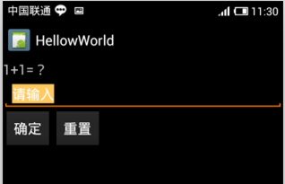
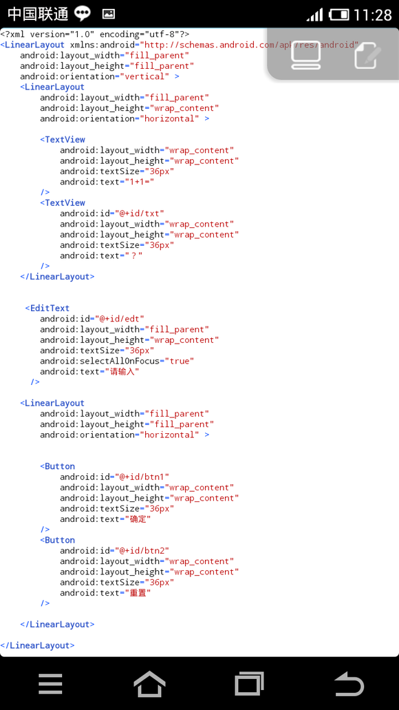
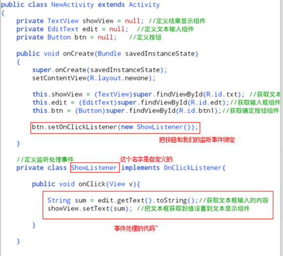
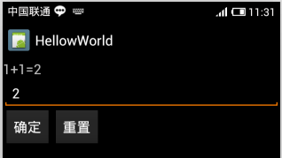

一个简单的单击事件(9课)
讲完这节我就打算讲java语言的一些基础了，为什么之前要讲界面讲获取组件的值这节又讲下简单的事件处理呢？因为我们的AIDE没有java控制台，所以没办法直接输出程序运行的结果，所以，当我们学习了怎么把一段文字设置给TextView在页面上显示，我们就可以在以后的一段时间里将以这样的方式看到我们java代码运行结果（把输出结果设为一个TextView的文本值，这样我们就看得见了）。
当然，程序没有交互性是很乏味的，你平时使用Android软件，用点击、长按、滑动来操作软件，这些就是与程序进行"交互"，很显然，我们之前写的安卓程序都没有交互性，你肯定觉得这样的程序没什么意思。。。本来是想讲下Android事件处理的，可是里面涉及到了java语言里的"方法"、"接口"等等不是一两句话的解释的清楚，我们这里只讲一个简单的单击事件的例子是怎么写的。（短时间够用了）
在手机的使用过程中，经常要使用按钮触发一些基本的操作，这时就可以通过单击事件完成。单击使用View.OnClickListener接口进行事件处理，此接口定义如下：
...................
public static interface View.OnClickListener{
public void onClick(View v);
}
...................
如果要想设置此事件操作接口，则直接使用setOnClickListener()方法即可，当事件触发之后，使用onClick()方法执行具体的处理操作。
上面的话可能没有java基础的人看不明白，没关系，我们现在只需要掌握怎么操作的页面如下：

布局文件如下：

在这布局里，"1+1=？"是由两个TextView组成的，一个显示的是:"1+1="，另一个显示的是:"？"，我们现在要做的就写一个单击事件，当我们点击确定的时候，把文本框输入的值设置到那个显示"?"的TextView里，比如，我在文本框里输入2，点击确定，上面的显示就会变成:"1+1=2"~
看下图的代码怎么写的：

首先，我们需要在头部导入类包，写上下面两行代码：
import android.view.View;
import android.view.View.OnClickListener;
上面的两句图上没有，但要记得加上，这是写单击事件需要导入的。怎么获取和设置组件的值我就不说了，这里的代码和上一讲有小小不同，我们把定义组件的代码，例如：
private TextView showView = null;
这里写在了中括号外面，为的是让下面事件监听能够调用到我们onCreate方法里获取到的组件。。。（看不懂略过，以后学了java才会明白），在这句代码里，private是私有的意思，TextView是我们要定义的属性类型，showView是我们自己定义的名字，"=null"照搬就是。
然后我们在onCreate(){}外面定义一个事件监听：
private class ShowListener implements OnClickListener{
public void onClick(View v){
}
}
这里定义的是一个处理事件的内部类。ShowListener是我们自己给这个类定义的名字。我们的程序在触发点击事件后要干什么的代码就写在这里面。
如上图的，事件处理里有两行代码：
//获取文本框输入的内容
String sum = edit.getText().toString();
//把文本框获取到值设置到文本显示组件
showView.setText(sum);
OK，监听事件写好了，但这个事件是哪个组件的事件我们还没定义，所以，我们还要在onCreate(){}里写一句代码把"确定"按钮和这个事件绑定。代码：
btn.setOnClickListener(new ShowListener());
ShowListener是我们定义的监听事件的那个内部类的名字。运行一下：

这样的，我们的一个单击事件就完成了，还是不懂的童鞋可以看看这个>>简单的单击事件例子，我把代码放上来了。单击事件还有一种使用匿名内部类的写法：
btn.setOnClickListener(new OnClickListener(){
........public void onClick(View v){
................//代码写这里（这里的......用来表示写代码的缩进空格）
........}
});
这种写法简便一点不用跑到onCreate(){}外面定义一个事件监听~
课后练习:
我们不是还有一个"重置"按钮吗？把这个功能写出来。当点击"重置"按钮时，把输入框里的内容清空~（提示：把输入框内容设置成空的就OK）